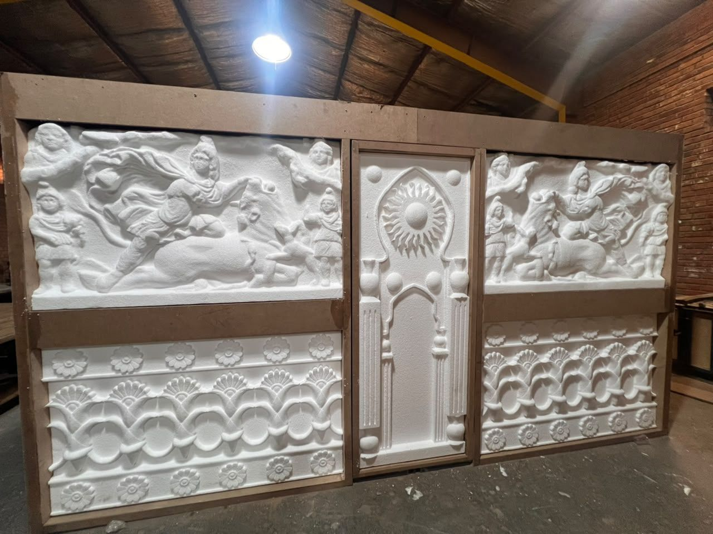
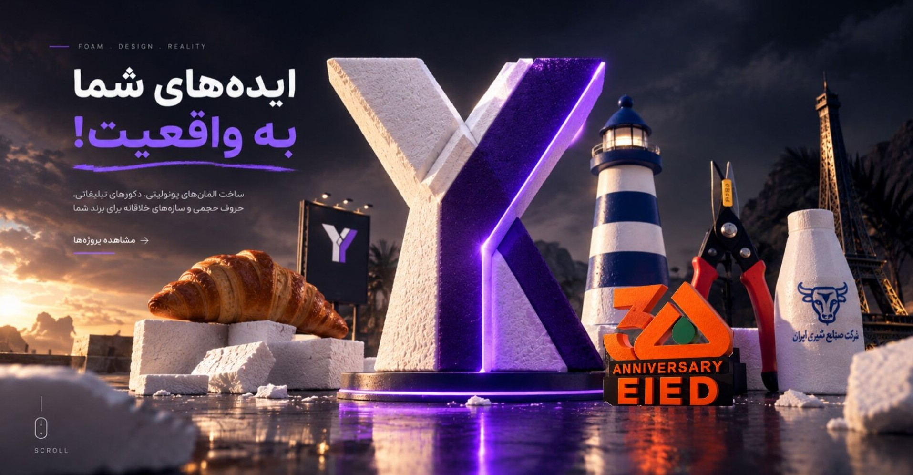
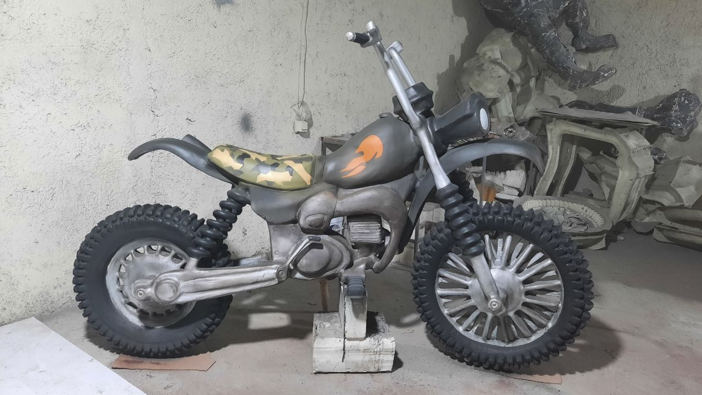
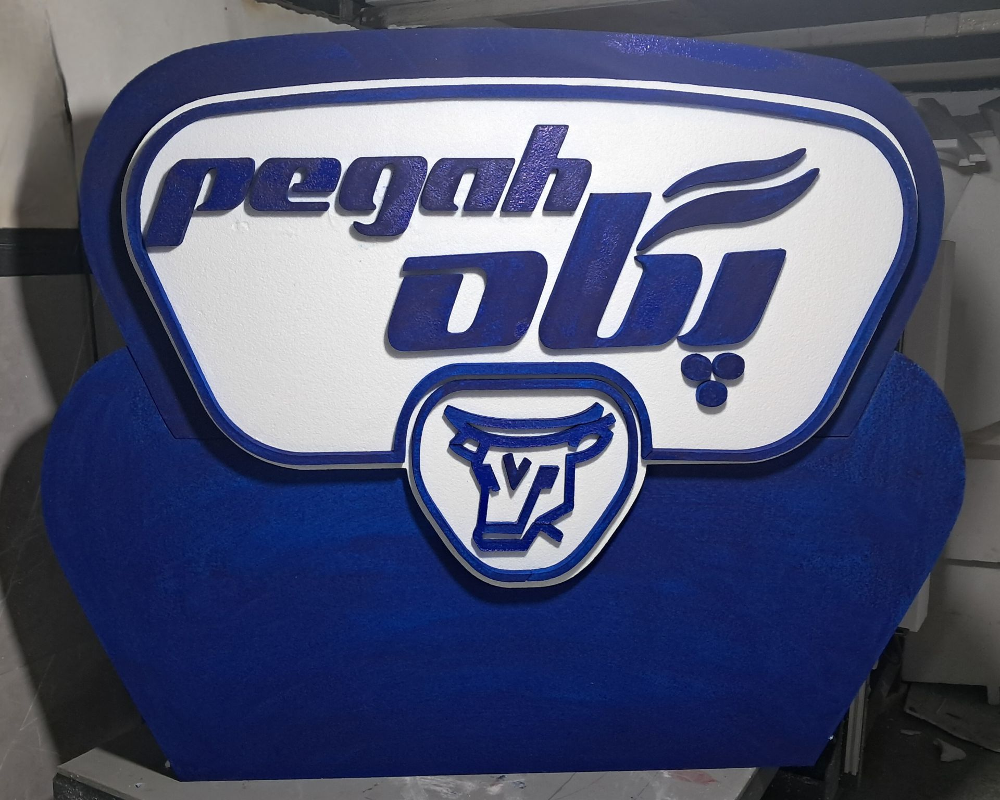
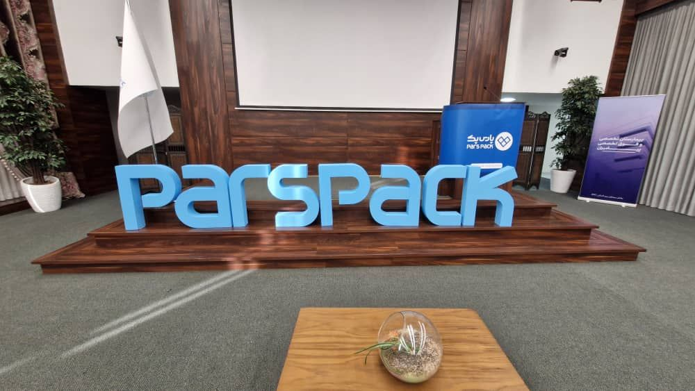
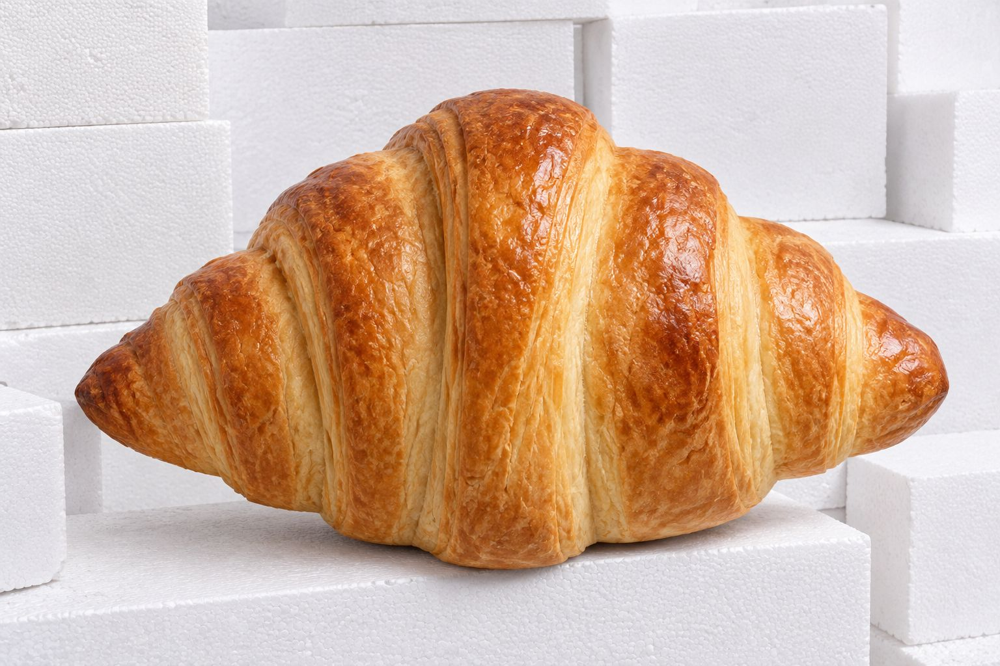
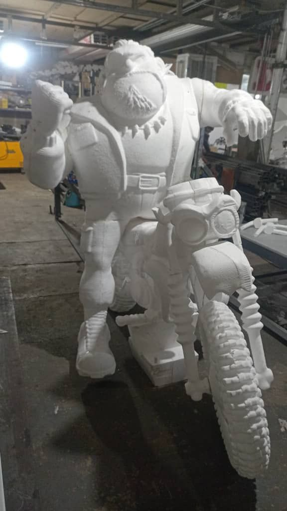
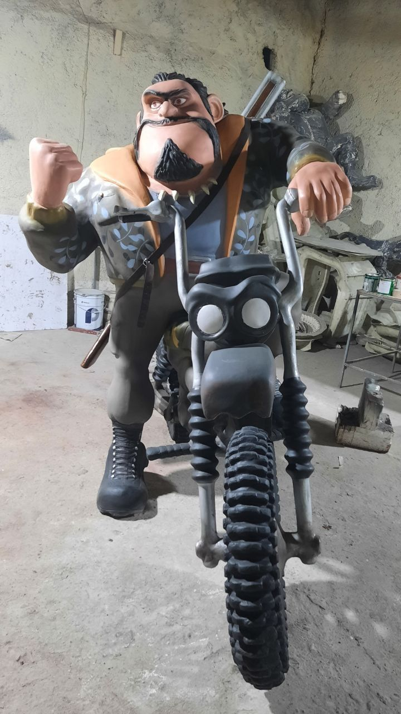

تولید فرمهای بزرگ با متریال سبک
از بلوک خام
تا فرم ماندگار.
ایدههای شما را با EPS، مدلسازی سهبعدی و برش CNC به دکور، استند، بستهبندی و قالبی دقیق تبدیل میکنیم.
01سبک و قابل اجرا
02دقیق و سفارشی
03آماده برای پوشش

EPSFORM[ 01 / 04 ]
فرمهای بزرگ، وزن کم ✳ دقت CNC، آزادی طراحی ✳ ساخت سفارشی برای پروژه شما ✳
چه چیزی میسازیم؟
سه مسیر برای
یک فرم دقیق
از ایده و نقشه تا ساخت، پوشش و نصب، هر پروژه با مسیر مخصوص خودش جلو میرود.

نمونهکارهای منتخب
پروژهها،
به زبان تصویر.
هر تصویر نتیجهی یک همکاری است؛ از ساخت المان شهری و صحنه تا محافظی که محصول را سالم به مقصد میرساند.
سفارش پروژه سفارشی ←

چطور ساخته میشود؟
از ایده تا
اجرای نهایی.
- 01ماده اولیهEPS با دانسیته مناسب پروژه
- 02طراحی سهبعدیتبدیل ایده به نقشه اجرایی
- 03برش CNCبرش تمیز و دقیق فرم
- 04مونتاژاتصال و شکلدهی نهایی
- 05پوششلایه محافظ ضد ضربه
- 06رنگرنگآمیزی و چاپ سفارشی
- 07کنترل کیفیتبازبینی جزئیات و ابعاد
- 08نصبتحویل در محل پروژه
کاربردهای واقعی
هرجا فرم مهم است،
EPS وارد میشود.
سبکسازی، سرعت اجرا و آزادی شکلدهی، یونولیت را برای پروژههای پرجزئیات به یک انتخاب هوشمند تبدیل میکند.





متریال را بشناس
خام، دقیق،
آمادهی ماندن.
یونولیت فقط یک متریال سبک نیست؛ بستری است برای ساخت فرمهایی که با پوشش درست، حضور جدیتری در فضا پیدا میکنند.
بررسی پروژه من ↗
RAW / 01
FORM / 02آرشیو تصویری
تمام فرمها
در یک قاب.
شروع کنیم؟
فایل سهبعدی یا
ایدهتان را بفرستید.
برای برآورد دقیق، کافی است چند تصویر، ابعاد یا توضیح کوتاه از پروژه را ارسال کنید.
EPS
STUDIOFORM FOLLOWS FUNCTION
STUDIOFORM FOLLOWS FUNCTION
پرسشهای پرتکرار
قبل از شروع،
بدانید.
آیا دکوراسیونهای یونولیتی در برابر ضربه و آب مقاوم هستند؟+
بله، با اجرای پوشش سطحی و رزین محافظ تخصصی، محصول در برابر رطوبت و ضربه مقاوم میشود. نوع پوشش بر اساس محل استفاده انتخاب میشود.
آیا میتوان هر طرح و شکلی را با یونولیت اجرا کرد؟+
بله. مدلسازی سهبعدی و برش CNC اجرای فرمهای پیچیده، مجسمه و المان دکوراتیو را ممکن میکند.
یونولیت چه مزیتی نسبت به بتن یا گچ دارد؟+
وزن کمتر، سرعت ساخت بالاتر، آزادی فرمدهی بیشتر و هزینه نصب پایینتر از مزیتهای اصلی آن است.
آیا برای فضای بیرونی هم مناسب است؟+
با پوشش ضدآب و رنگ صنعتی ضد UV، محصولات برای فضای بیرونی، محوطهسازی و المانهای شهری آماده میشوند.